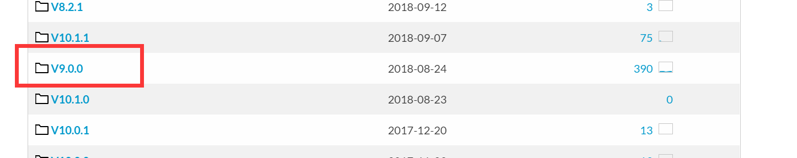
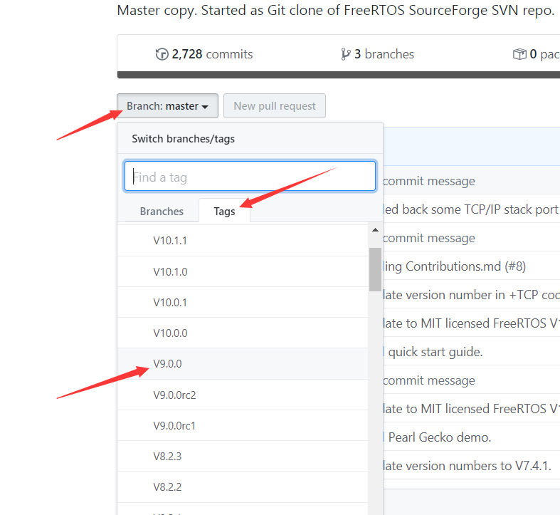

FreeRTOS 官网：https://www.freertos.org/index.html
# V9.0.0 源码版本获取
1、官方托管在 SVN 的源代码链接：https://sourceforge.net/projects/freertos/files/FreeRTOS/

2、官方托管在 GitHub 的源代码链接：https://github.com/FreeRTOS/FreeRTOS

这里使用 V9.0.0 版本，包括之后都是以 V9.0.0 版本为参考，不要问我为什么，哪个版本成熟稳定用那个。
# 文件分类
FreeRTOSv9.0.0
│
├─ New - Direct to Task Notifications
├─ New - FreeRTOS+TCP
├─ Quick_Start_Guide
├─ Upgrading-to-FreeRTOS-9
│
├─ FreeRTOS-Plus // 包含 FreeRTOS+组件(TCP/CLI/IO/UDP)和演示项目
│ │
│ ├─ Demo
│ ├─ Source
│ └─ readme.txt // 当前目录的一些文档说明
│
├─ FreeRTOS // 包含 FreeRTOS实时内核源代码文件和演示项目(主要移植这个)
│ │
│ ├─ Demo // 包含演示应用程序项目
│ ├─ License // 许可说明
│ ├─ Source // 包含实时内核源代码
│ ├─ links_to_doc_pages_for_the_demo_projects
│ └─ readme.txt // 当前目录的一些文档说明
│
└─ readme.txt // 主目录文档的大致说明
因为之后的实验是以移植 FreeRTOS 这个文件为主，所以主要讲解这个文件里面的东西
1、首先是 FreeRTOS/Source 文件
FreeRTOS
└─ Source // 核心 FreeRTOS内核文件
│
├─ include // 核心 FreeRTOS内核头文件
│
├─ portable // 与处理器相关的特定代码
│ │
│ ├─ Compiler x // 编译器x 支持的所有端口
│ ├─ Compiler y // 编译器y 支持的所有端口
│ ├─ MemMang // 堆实现的示例
│ └─ readme.txt // 当前目录的一些文档说明
│
└─ readme.txt // 当前目录的一些文档说明

FreeRTOS/Source 目录包含 FreeRTOS 源代码，并包含它自己的自述文件。
FreeRTOS/Source/Portable 目录包含特定于特定微控制器和或编译器的文件。
FreeRTOS/Source/include 目录包含实时内核头文件。
核心 RTOS 代码包含在三个文件中，他们分别是 tasks.c ， queue.c 和 list.c ，这三个文件位于 FreeRTOS/Source 目录中；同一目录下还包含两个名为 timers.c 和 croutine.c 的可选文件，它们分别实现软件计时器和协同例程功能。
同样的，官方提供的几个堆的分配方案也位于可移植层中。各种样本 heap_x.c 文件位于 FreeRTOS/Source/portable/MemMang 目录中
2、FreeRTOS/Demo 文件
FreeRTOS
└─ Demo // 演示应用程序项目
│
├─ Common // 所有演示使用的演示应用程序文件
│
├─ Dir x // 端口 x的演示应用程序构建文件
│
├─ Dir y // 端口 y的演示应用程序构建文件
│
└─ readme.txt // 当前目录的一些文档说明
FreeRTOS/Demo 目录包含用于每种处理器体系结构和编译器端口的演示应用程序。演示应用程序的大部分代码对所有端口通用，并且包含在 FreeRTOS/Demo/Common/Minimal 目录中（位于 FreeRTOS/Demo/Common/Full 目录中的代码是旧代码，仅由 PC 端口使用） 。
其余的 FreeRTOS/Demo 子目录包含用于构建单个演示应用程序的预配置项目，目录被命名以指示它们所关联的端口；每个 RTOS 端口目录下包含着自己的 readme 文件，而且它们还具有其自己的网页，该网页详细说明了可在其中找到该端口的演示应用程序的目录。
# 其他
具体的关于官方文档解析的更多信息可以看当前目录下的 readme 文件以及在官方的这个链接查看：https://www.freertos.org/a00017.html